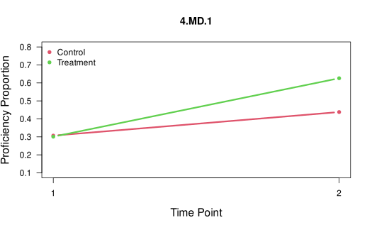
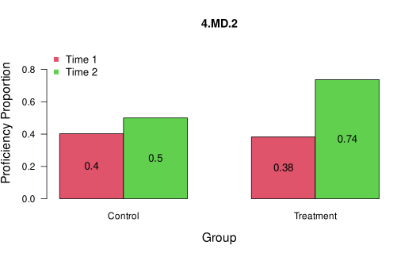
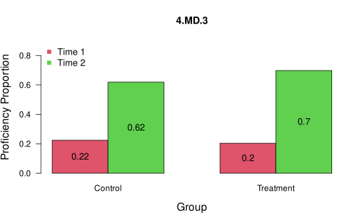

Introduction to the TDCM Package
Matthew J. Madison
Michael E. Cotterell
November 2024
Source:vignettes/TDCM.Rmd
TDCM.RmdOverview of the TDCM Package
The TDCM R package implements estimation of longitudinal diagnostic classification models (DCMs) using the transition diagnostic classification model (TDCM) framework described in Madison & Bradshaw (2018). The TDCM is a longitudinal extension of the log-linear cognitive diagnosis model (LCDM) developed by Henson, Templin & Willse (2009). As the LCDM is a general DCM, many other DCMs can be embedded within TDCM.
The TDCM package includes functions to estimate the
single group (TDCM::tdcm()) and multigroup
(TDCM::mg.tdcm()) TDCM and summarize results of interest,
including: item parameter estimates, growth proportions, transition
probabilities, transition reliability, attribute correlations, model
fit, and growth plots. Internally, the TDCM package
uses CDM::gdina() from the CDM package
developed by Robitzsch
et al. (2022) to estimate TDCMs using a method described in Madison et
al. (2024).
This vignette provides an overview of the package’s core functionality by walking through two examples. The code below can be copied into the R console and run. For more detailed video demonstrations of the package and its functionality, visit Matthew J. Madison’s Logitudinal DCMs page.
Core Functionalities
To estimate the single group and multigroup TDCM, use the
TDCM::tdcm()andTDCM::mg.tdcm()functions, respectively.To extract item, person, and growth parameters from TDCM estimates, use the
TDCM::tdcm.summary()andTDCM::mg.tdcm.summary()functions for single group and multigroup analyses, respectively. These summary functions produce a list of results that include: item parameter estimates, growth proportions and effect sizes, transition probability matrices, transition reliability, attribute correlations, and model fit.To compare models and assess relative fit, use the
TDCM::tdcm.compare()function.To plot the results of a TDCM analysis, use the
TDCM::tdcm.plot()function.To score responses using fixed item parameters from a previously calibrated model, use the
TDCM::tdcm.score()function.
Extended Functionalities
Different DCMs (e.g., LCDM, DINA, CRUM, GDINA) can be modeled using the
TDCM::tdcm()function by supplying an argument for itsruleandlinkfctparameters. For DCMrulespecification, the package currently accepts “LCDM” (default), “DINA”, “DINO”, “CRUM”, “RRUM”, “LCDM2” for the LCDM with up to two-way interactions, “LCDM3” for the LCDM with up to three-way interactions, and so on. Different link functions can be specified in thelinkfctparameter, including “logit” (default), “identity” to obtain the GDINA model, and “log”.Using multiple Q-matrices for each time is supported by the
TDCM::tdcm()function. To enable this functionality, an argument \(>=\) 2 must be supplies for itsnum.q.matrixparameter, and an appropriately stacked Q-matrix must be supplied for itsq.matrixparameter.Anchor (common) items between time points can be specified with the
anchorparameter.A reduced transition space can be implemented with the
forget.attargument, where attribute proficiency loss, or forgetting, can be constrained for individual attributes.For more than two time points, transitions can be defined differently (e.g., first-to-last, first-to-each, successive) with the
transition.optionparameter.Responses can be scored using fixed item parameters from a previously calibrated model using the
TDCM::tdcm.score()function.
Example 1: Single Group TDCM
Suppose we have a sample of 1000 fourth grade students. They were assessed before and after a unit covering 4 measurement and data (MD) standards (attributes):
standards <- paste0("4.MD.", 1:4)
standards[1] "4.MD.1" "4.MD.2" "4.MD.3" "4.MD.4"The students took the same 20-item assessment, five weeks apart. The goal is to examine how the students transition to proficiency of the four assessed attributes.
Step 1: Load the Package and Sample Dataset
# Load the TDCM package and sample dataset
library(TDCM)
data(data.tdcm01, package = "TDCM")
# Get item responses from sample data.
data <- data.tdcm01$data
head(data) t1tem1 t1tem2 t1tem3 t1tem4 t1tem5 t1tem6 t1tem7 t1tem8 t1tem9 t1tem10
1 0 0 1 0 0 0 1 0 0 1
2 0 1 1 0 1 0 0 0 0 1
3 0 0 0 1 1 1 0 1 0 1
4 1 0 0 0 0 0 0 0 0 0
5 1 0 0 0 0 0 0 0 0 0
6 0 0 0 0 0 0 1 0 1 0
t1tem11 t1tem12 t1tem13 t1tem14 t1tem15 t1tem16 t1tem17 t1tem18 t1tem19
1 0 0 0 1 0 1 0 1 0
2 1 1 1 1 1 1 0 1 0
3 1 0 0 1 0 0 1 1 0
4 0 0 0 0 0 0 0 0 0
5 0 1 0 1 0 1 0 1 0
6 1 0 0 0 0 0 0 0 0
t1tem20 t2item1 t2item2 t2item3 t2item4 t2item5 t2item6 t2item7 t2item8
1 1 0 1 1 1 1 0 0 0
2 0 0 0 0 0 0 0 0 0
3 1 0 0 1 0 1 0 1 1
4 0 0 0 0 0 0 1 0 1
5 0 0 1 0 0 1 1 1 1
6 1 0 0 0 0 0 0 0 0
t2item9 t2item10 t2item11 t2item12 t2item13 t2item14 t2item15 t2item16
1 0 0 0 1 0 1 1 0
2 0 1 0 0 0 1 0 1
3 1 1 1 1 1 0 1 0
4 1 0 1 1 1 1 1 1
5 1 1 1 0 1 1 0 1
6 1 0 1 1 1 1 1 1
t2item17 t2item18 t2item19 t2item20
1 1 0 1 0
2 1 0 1 0
3 0 0 0 0
4 1 1 1 1
5 1 1 0 1
6 1 1 0 0
# Get Q-matrix from sample data and rename the attributes to match the standard.
q.matrix <- data.tdcm01$q.matrix
colnames(q.matrix) <- standards
q.matrix 4.MD.1 4.MD.2 4.MD.3 4.MD.4
Item1 1 0 0 0
Item2 1 0 0 0
Item3 1 0 0 0
Item4 1 1 0 0
Item5 1 0 1 0
Item6 0 1 0 0
Item7 0 1 0 0
Item8 0 1 0 0
Item9 0 1 1 0
Item10 0 1 0 1
Item11 0 0 1 0
Item12 0 0 1 0
Item13 0 0 1 0
Item14 0 0 1 1
Item15 1 0 1 0
Item16 0 0 0 1
Item17 0 0 0 1
Item18 0 0 0 1
Item19 1 0 0 1
Item20 0 1 0 1Step 2: Estimate the TDCM
To estimate the TDCM, let’s make some decisions. The Q-matrix has some complex items measuring 2 attributes, so we initially estimate the full LCDM with two-way interactions (default). Since the students took the same assessment, we can assume measurement invariance and will test the assumption later.
# Calibrate TDCM with measurement invariance assumed, full LCDM
model1 <- tdcm(data, q.matrix, num.time.points = 2)[1] Preparing data for tdcm()...
[1] Estimating the TDCM in tdcm()...
[1] Depending on model complexity, estimation time may vary...
[1] TDCM estimation complete.
[1] Use tdcm.summary() to display results.Step 3: Summarize the Results
To summarize results, use the
TDCM::tdcm.summary()function. After running the summary
function, we can examine item parameters, growth in attribute
proficiency, transition probability matrices, individual transitions,
and transitional reliability estimates.
# Summarize the results
results1 <- tdcm.summary(model1, attribute.names = standards)[1] Summarizing results...
[1] Routine finished. Check results.To demonstrate interpretation, let’s discuss some of the results.
item.parameters <- results1$item.parameters
item.parameters λ0 λ1,1 λ1,2 λ1,3 λ1,4 λ2,12 λ2,13 λ2,14 λ2,23 λ2,24 λ2,34
Item 1 -1.905 2.599 -- -- -- -- -- -- -- -- --
Item 2 -2.072 2.536 -- -- -- -- -- -- -- -- --
Item 3 -1.934 2.517 -- -- -- -- -- -- -- -- --
Item 4 -1.892 1.091 1.499 -- -- 1.057 -- -- -- -- --
Item 5 -2.17 1.456 -- 1.794 -- -- 1.018 -- -- -- --
Item 6 -1.843 -- 2.199 -- -- -- -- -- -- -- --
Item 7 -1.825 -- 2.259 -- -- -- -- -- -- -- --
Item 8 -1.967 -- 2.497 -- -- -- -- -- -- -- --
Item 9 -2.009 -- 1.079 1.511 -- -- -- -- 1.818 -- --
Item 10 -2 -- 1.849 -- 1.324 -- -- -- -- 1.065 --
Item 11 -1.845 -- -- 2.329 -- -- -- -- -- -- --
Item 12 -2.033 -- -- 2.539 -- -- -- -- -- -- --
Item 13 -2.071 -- -- 2.55 -- -- -- -- -- -- --
Item 14 -2.093 -- -- 1.739 2.031 -- -- -- -- -- 0.496
Item 15 -1.785 0.307 -- 1.295 -- -- 2.374 -- -- -- --
Item 16 -2.218 -- -- -- 2.837 -- -- -- -- -- --
Item 17 -2.084 -- -- -- 2.69 -- -- -- -- -- --
Item 18 -2.101 -- -- -- 2.521 -- -- -- -- -- --
Item 19 -2.1 2.653 -- -- 1.432 -- -- 0.098 -- -- --
Item 20 -2.061 -- 2.545 -- 1.53 -- -- -- -- -0.005 -- Item 1 measuring 4.MD.1 has an intercept estimate of
-1.905 and a main effect estimate of -2.072.
growth <- results1$growth
growth T1[1] T2[1]
4.MD.1 0.190 0.370
4.MD.2 0.317 0.491
4.MD.3 0.392 0.579
4.MD.4 0.242 0.693With respect to growth, we see that students exhibited about the same
amount of growth for 4.MD.1, 4.MD.2, and
4.MD.3 (about 18.03% growth in proficiency), but showed
larger gains for 4.MD.4 (about 45.1%).
transition.probabilities <- results1$transition.probabilities
transition.probabilities, , 4.MD.1: Time 1 to Time 2
T2 [0] T2 [1]
T1 [0] 0.680 0.320
T1 [1] 0.417 0.583
, , 4.MD.2: Time 1 to Time 2
T2 [0] T2 [1]
T1 [0] 0.581 0.419
T1 [1] 0.353 0.647
, , 4.MD.3: Time 1 to Time 2
T2 [0] T2 [1]
T1 [0] 0.549 0.451
T1 [1] 0.221 0.779
, , 4.MD.4: Time 1 to Time 2
T2 [0] T2 [1]
T1 [0] 0.371 0.629
T1 [1] 0.104 0.896Examining the 4.MD.1 transition probability matrix, we
see that of the students who started in non-proficiency, 32% of them
transitioned into proficiency.
transition.posteriors <- results1$transition.posteriors
head(transition.posteriors), , 4.MD.1: T1 to T2
00 01 10 11
1 0.000 0.999 0.000 0.000
2 0.092 0.000 0.908 0.000
3 0.988 0.007 0.005 0.001
4 0.943 0.038 0.019 0.000
5 0.975 0.014 0.011 0.000
6 0.995 0.004 0.000 0.000
, , 4.MD.2: T1 to T2
00 01 10 11
1 0.068 0.000 0.928 0.004
2 0.988 0.007 0.005 0.000
3 0.000 0.001 0.001 0.998
4 0.100 0.899 0.000 0.002
5 0.000 0.999 0.000 0.001
6 0.454 0.003 0.540 0.003
, , 4.MD.3: T1 to T2
00 01 10 11
1 0.002 0.985 0.000 0.013
2 0.000 0.000 0.995 0.005
3 0.000 0.971 0.000 0.029
4 0.001 0.993 0.000 0.007
5 0.000 0.868 0.001 0.131
6 0.001 0.556 0.001 0.443
, , 4.MD.4: T1 to T2
00 01 10 11
1 0.000 0.015 0.063 0.922
2 0.000 0.049 0.001 0.950
3 0.001 0.000 0.967 0.031
4 0.001 0.996 0.000 0.004
5 0.000 0.157 0.000 0.843
6 0.003 0.997 0.000 0.000Examining the individual transition posterior probabilities, we see that Examinee 1 has a mostly likely transition of 0 → 1 (0.999 probability).
results1$reliability pt bis info gain polychor ave max tr P(t>.6) P(t>.7) P(t>.8) P(t>.9)
4.MD.1 0.821 0.516 0.936 0.931 0.966 0.927 0.861 0.790
4.MD.2 0.792 0.552 0.916 0.908 0.939 0.893 0.839 0.731
4.MD.3 0.770 0.540 0.922 0.895 0.943 0.870 0.796 0.674
4.MD.4 0.771 0.494 0.914 0.913 0.952 0.894 0.829 0.748
wt pt bis wt info gain
4.MD.1 0.834 0.601
4.MD.2 0.809 0.591
4.MD.3 0.786 0.584
4.MD.4 0.798 0.602Finally, transition reliability appears adequate, with average maximum transition posteriors ranging from .88 to .92 for the four attributes.
Step 4: Assess Measurement Invariance
To assess measurement invariance, let’s estimate a model without invariance assumed, then compare to our first model. Here we see that AIC, BIC, and the likelihood ratio test prefer the model with invariance assumed. Therefore, item parameter invariance is a reasonable assumption and we can interpret results.
# Estimate TDCM with measurement invariance not assumed.
model2 <- tdcm(data, q.matrix, num.time.points = 2, invariance = FALSE)[1] Preparing data for tdcm()...
[1] Estimating the TDCM in tdcm()...
[1] Depending on model complexity, estimation time may vary...
[1] TDCM estimation complete.
[1] Use tdcm.summary() to display results.
# Compare Model 1 (longitudinal invariance assumed) to Model 2 (invariance not assumed).
tdcm.compare(model1, model2) Model loglike Deviance Npars AIC BIC Chisq df p
1 model1 -21369.72 42739.44 311 43361.44 44887.75 64.68 56 0.1995
2 model2 -21337.38 42674.75 367 43408.75 45209.9 NA NA NAStep 5: Estimate other DCMs
To estimate other DCMs, change the rule argument. To
specify one DCM across all items, include one specification. To specify
a different DCM on each item, use a vector with length equal to the
number of items. Here, we specify a DINA measurement model and a main
effects model (ACDM). Here, we see that the full LCDM fits better than
the DINA model and the main effects model.
# calibrate TDCM with measurement invariance assumed, DINA measurement model
model3 <- tdcm(data, q.matrix, num.time.points = 2, rule = "DINA")[1] Preparing data for tdcm()...
[1] Estimating the TDCM in tdcm()...
[1] Depending on model complexity, estimation time may vary...
[1] TDCM estimation complete.
[1] Use tdcm.summary() to display results.
#calibrate TDCM with measurement invariance assumed, ACDM measurement model
model4 <- tdcm(data, q.matrix, num.time.points = 2, rule = "CRUM")[1] Preparing data for tdcm()...
[1] Estimating the TDCM in tdcm()...
[1] Depending on model complexity, estimation time may vary...
[1] TDCM estimation complete.
[1] Use tdcm.summary() to display results.
#compare Model 1 (full LCDM) to Model 3 (DINA)
tdcm.compare(model1, model3) Model loglike Deviance Npars AIC BIC Chisq df p
1 model1 -21369.72 42739.44 311 43361.44 44887.75 502.22 16 0
2 model3 -21620.83 43241.67 295 43831.67 45279.46 NA NA NA
#compare Model 1 (full LCDM) to Model 4 (CRUM)
tdcm.compare(model1, model4) Model loglike Deviance Npars AIC BIC Chisq df p
1 model1 -21369.72 42739.44 311 43361.44 44887.75 60.3 8 0
2 model4 -21399.87 42799.74 303 43405.74 44892.79 NA NA NAStep 6: Assess Absolute Fit
To assess absolute fit, extract model fit statistics from the results summary.
results1$model.fit$Global.Fit.Stats est
MADcor 0.02257097
SRMSR 0.02834149
100*MADRESIDCOV 0.49363470
MADQ3 0.03199369
MADaQ3 0.03081550
results1$model.fit$Global.Fit.Tests type value p
1 max(X2) 10.06542439 1.0000000
2 abs(fcor) 0.09731844 0.8268709
results1$model.fit$Global.Fit.Stats2 maxX2 p_maxX2 MADcor SRMSR 100*MADRESIDCOV MADQ3 MADaQ3
1 10.06542 1 0.02257097 0.02834149 0.4936347 0.03199369 0.0308155
results1$model.fit$Item.RMSEA Item 1 Item 2 Item 3 Item 4 Item 5 Item 6 Item 7
0.09391612 0.12079524 0.10670311 0.10952611 0.11962801 0.13655715 0.13845978
Item 8 Item 9 Item 10 Item 11 Item 12 Item 13 Item 14
0.10811876 0.11353405 0.11115225 0.12981641 0.11323978 0.10265758 0.11435661
Item 15 Item 16 Item 17 Item 18 Item 19 Item 20 Item 21
0.12122112 0.12147005 0.10578848 0.11120378 0.09767873 0.13304620 0.10788168
Item 22 Item 23 Item 24 Item 25 Item 26 Item 27 Item 28
0.10949474 0.11713454 0.12149082 0.11334556 0.12767058 0.12317678 0.10590232
Item 29 Item 30 Item 31 Item 32 Item 33 Item 34 Item 35
0.11158355 0.11326936 0.11504822 0.11948474 0.11920146 0.09564141 0.12998822
Item 36 Item 37 Item 38 Item 39 Item 40
0.11363849 0.12522381 0.11581421 0.10939110 0.11244670
results1$model.fit$Mean.Item.RMSEA[1] 0.1153924Step 7: Visualize
For a visual presentation of results, run the
tdcm.plot() function:
# plot results (check plot viewer for line plot and bar chart)
tdcm.plot(results1, attribute.names = standards)Example 2: Multigroup TDCM
Suppose now that we have a sample of 1700 fourth grade students. But in this example, researchers wanted to evaluate the effects of an instructional intervention. So they randomly assigned students to either the control group (Group 1, N1 = 800) or the treatment group (Group 2, N2 = 900). The goal was to see if the innovative instructional method resulted in more students transitioning into proficiency.
Similar to Example #1, students were assessed before and after a unit covering four measurement and data (MD) standards (attributes; 4.MD.1 - 4.MD.4). The students took the same 20-item assessment five weeks apart.
Step 1: Load the package and Dataset #4 included in the package:
#load the TDCM library
library(TDCM)
#read data, Q-matrix, and group labels
dat4 <- data.tdcm04$data
qmat4 <- data.tdcm04$q.matrix
groups <- data.tdcm04$groups
head(dat4) t1item1 t1item2 t1item3 t1item4 t1item5 t1item6 t1item7 t1item8 t1item9
1 0 0 0 0 0 0 0 0 0
2 0 0 0 0 0 0 0 0 0
3 0 1 0 0 0 0 0 1 0
4 0 0 0 1 0 0 0 0 0
5 1 0 0 1 1 0 1 1 1
6 1 1 1 0 1 0 1 1 0
t1item10 t1item11 t1item12 t1item13 t1item14 t1item15 t1item16 t1item17
1 0 0 0 0 0 0 0 0
2 1 0 0 0 0 0 0 0
3 0 0 0 1 0 0 0 0
4 0 1 0 0 0 0 1 1
5 0 0 0 0 0 0 0 0
6 1 0 1 1 1 1 1 0
t1item18 t1item19 t1item20 t2item1 t2item2 t2item3 t2item4 t2item5 t2item6
1 0 0 0 0 0 1 1 0 0
2 0 0 0 0 1 1 0 0 1
3 0 0 0 0 0 1 0 0 0
4 0 0 0 0 1 1 1 1 0
5 1 0 0 0 0 1 1 0 0
6 1 1 1 0 0 0 0 0 1
t2item7 t2item8 t2item9 t2item10 t2item11 t2item12 t2item13 t2item14 t2item15
1 0 0 0 0 1 1 0 1 1
2 0 0 0 0 0 0 0 0 0
3 0 0 0 0 1 1 1 0 0
4 1 1 0 1 0 1 0 1 1
5 1 0 0 1 0 0 0 1 0
6 1 1 1 1 1 0 1 1 0
t2item16 t2item17 t2item18 t2item19 t2item20
1 0 1 1 0 0
2 0 0 0 0 0
3 0 0 0 0 0
4 0 1 1 1 1
5 1 1 1 0 1
6 0 0 0 0 1Step 2: To estimate the multigroup TDCM, we will use the mg.tdcm() function. For this initial model, we will assume time invariance and group invariance. In the next step, we will test these assumptions.
#calibrate mgTDCM with time and group invariance assumed, full LCDM
mg1 <- mg.tdcm(data = dat4, q.matrix = qmat4, num.time.points = 2, rule = "LCDM", groups = groups, group.invariance = TRUE, time.invariance = TRUE)[1] Preparing data for mg.tdcm()...
[1] Estimating the multigroup TDCM in mg.tdcm()...
[1] Depending on model complexity, estimation time may vary...
[1] Multigroup TDCM estimation complete.
[1] Use mg.tdcm.summary() to display results.Step 3: To assess measurement invariance, let’s estimate three additional models: - A model assuming time invariance (TRUE) and not assuming group invariance (FALSE) - A model not assuming time invariance (FALSE) and assuming group invariance (TRUE) - A model not assuming either; time invariance (FALSE) and group invariance (FALSE)
All model comparisons prefer the model with group and time invariance. Therefore, we can proceed in interpreting Model 1.
#calibrate mgTDCM with item invariance assumed, full LCDM
mg2 <- mg.tdcm(data = dat4, q.matrix = qmat4, num.time.points = 2, groups = groups, group.invariance = FALSE, time.invariance = TRUE)[1] Preparing data for mg.tdcm()...
[1] Estimating the multigroup TDCM in mg.tdcm()...
[1] Depending on model complexity, estimation time may vary...
[1] Multigroup TDCM estimation complete.
[1] Use mg.tdcm.summary() to display results.
#calibrate mgTDCM with group invariance assumed, full LCDM
mg3 <- mg.tdcm(data = dat4, q.matrix = qmat4, num.time.points = 2, groups = groups, group.invariance = TRUE, time.invariance = FALSE)[1] Preparing data for mg.tdcm()...
[1] Estimating the multigroup TDCM in mg.tdcm()...
[1] Depending on model complexity, estimation time may vary...
[1] Multigroup TDCM estimation complete.
[1] Use mg.tdcm.summary() to display results.
#calibrate mgTDCM with no invariance assumed, full LCDM
mg4 <- mg.tdcm(data = dat4, q.matrix = qmat4, num.time.points = 2, groups = groups, group.invariance = FALSE, time.invariance = FALSE)[1] Preparing data for mg.tdcm()...
[1] Estimating the multigroup TDCM in mg.tdcm()...
[1] Depending on model complexity, estimation time may vary...
[1] Multigroup TDCM estimation complete.
[1] Use mg.tdcm.summary() to display results.
#compare Model 1 (group/time invariance) to Model 2 (no group invariance)
tdcm.compare(mg1, mg2) Model loglike Deviance Npars AIC BIC Chisq df p
1 mg1 -37248.15 74496.3 566 75628.3 78706.43 37.08 56 0.9759
2 mg2 -37229.61 74459.22 622 75703.22 79085.9 NA NA NA
#compare Model 1 (group/time invariance) to Model 3 (no time invariance)
tdcm.compare(mg1, mg3) Model loglike Deviance Npars AIC BIC Chisq df p
1 mg1 -37248.15 74496.3 566 75628.3 78706.43 72.96 56 0.0635
2 mg3 -37211.67 74423.33 622 75667.33 79050.01 NA NA NA
#compare Model 1 (group/time invariance) to Model 4 (no invariance)
tdcm.compare(mg1, mg4) Model loglike Deviance Npars AIC BIC Chisq df p
1 mg1 -37248.15 74496.3 566 75628.3 78706.43 190.3 168 0.1146
2 mg4 -37153 74306.01 734 75774.01 79765.78 NA NA NAStep 4: To summarize results, use the mg.tdcm.summary() function. After running the summary function, we can examine item parameters, growth in attribute proficiency by group, transition probability matrices by group, individual transitions, and transitional reliability estimates.
To demonstrate interpretation, let’s discuss some of the results. Item 1 measuring 4.MD.1 has an intercept estimate of -1.89 and a main effect estimate of 2.39. With respect to growth, first we see that the randomization appeared to work, as both groups had similar proficiency proportions at the first assessment. Then we see that for all but the 4.MD.4 attribute, the treatment group showed increased growth in attribute proficiency.
#summarize results
resultsmg1 <- mg.tdcm.summary(mg1, attribute.names = c("4.MD.1", "4.MD.2", "4.MD.3", "4.MD.4"), group.names = c("Control", "Treatment"))[1] Summarizing results...
[1] Routine finished. Check results.
resultsmg1$item.parameters λ0 λ1,1 λ1,2 λ1,3 λ1,4 λ2,12 λ2,13 λ2,14 λ2,23 λ2,24 λ2,34
Item 1 -1.888 2.393 -- -- -- -- -- -- -- -- --
Item 2 -2.06 2.572 -- -- -- -- -- -- -- -- --
Item 3 -2.185 2.633 -- -- -- -- -- -- -- -- --
Item 4 -2.126 1.778 1.575 -- -- 0.688 -- -- -- -- --
Item 5 -2.072 1.431 -- 1.353 -- -- 1.328 -- -- -- --
Item 6 -1.918 -- 2.432 -- -- -- -- -- -- -- --
Item 7 -1.888 -- 2.451 -- -- -- -- -- -- -- --
Item 8 -2.001 -- 2.443 -- -- -- -- -- -- -- --
Item 9 -2.096 -- 1.76 1.694 -- -- -- -- 0.699 -- --
Item 10 -2.093 -- 1.38 -- 1.614 -- -- -- -- 1.04 --
Item 11 -1.973 -- -- 2.485 -- -- -- -- -- -- --
Item 12 -2.191 -- -- 2.697 -- -- -- -- -- -- --
Item 13 -1.893 -- -- 2.375 -- -- -- -- -- -- --
Item 14 -1.941 -- -- 1.437 1.236 -- -- -- -- -- 1.06
Item 15 -2.172 1.743 -- 1.784 -- -- 0.683 -- -- -- --
Item 16 -2.153 -- -- -- 2.613 -- -- -- -- -- --
Item 17 -2.366 -- -- -- 3.007 -- -- -- -- -- --
Item 18 -2.046 -- -- -- 2.47 -- -- -- -- -- --
Item 19 -2.036 1.537 -- -- 1.367 -- -- 0.922 -- -- --
Item 20 -2.225 -- 1.721 -- 1.774 -- -- -- -- 0.694 --
resultsmg1$growth, , Control
T1[1] T2[1]
4.MD.1 0.307 0.438
4.MD.2 0.402 0.500
4.MD.3 0.224 0.619
4.MD.4 0.424 0.737
, , Treatment
T1[1] T2[1]
4.MD.1 0.301 0.626
4.MD.2 0.382 0.737
4.MD.3 0.204 0.698
4.MD.4 0.448 0.712
resultsmg1$growth.effects, , Control
T1[1] T2[1] Growth Odds Ratio Cohen`s h
4.MD.1 0.307 0.438 0.131 1.76 0.27
4.MD.2 0.402 0.500 0.098 1.49 0.20
4.MD.3 0.224 0.619 0.395 5.63 0.83
4.MD.4 0.424 0.737 0.313 3.81 0.65
, , Treatment
T1[1] T2[1] Growth Odds Ratio Cohen`s h
4.MD.1 0.301 0.626 0.325 3.89 0.66
4.MD.2 0.382 0.737 0.355 4.53 0.73
4.MD.3 0.204 0.698 0.494 9.02 1.04
4.MD.4 0.448 0.712 0.264 3.05 0.54
resultsmg1$transition.probabilities, , 4.MD.1: Time 1 to Time 2, Control
T2 [0] T2 [1]
T1 [0] 0.634 0.366
T1 [1] 0.399 0.601
, , 4.MD.2: Time 1 to Time 2, Control
T2 [0] T2 [1]
T1 [0] 0.571 0.429
T1 [1] 0.393 0.607
, , 4.MD.3: Time 1 to Time 2, Control
T2 [0] T2 [1]
T1 [0] 0.438 0.562
T1 [1] 0.185 0.815
, , 4.MD.4: Time 1 to Time 2, Control
T2 [0] T2 [1]
T1 [0] 0.334 0.666
T1 [1] 0.166 0.834
, , 4.MD.1: Time 1 to Time 2, Treatment
T2 [0] T2 [1]
T1 [0] 0.435 0.565
T1 [1] 0.231 0.769
, , 4.MD.2: Time 1 to Time 2, Treatment
T2 [0] T2 [1]
T1 [0] 0.362 0.638
T1 [1] 0.104 0.896
, , 4.MD.3: Time 1 to Time 2, Treatment
T2 [0] T2 [1]
T1 [0] 0.361 0.639
T1 [1] 0.073 0.927
, , 4.MD.4: Time 1 to Time 2, Treatment
T2 [0] T2 [1]
T1 [0] 0.353 0.647
T1 [1] 0.208 0.792
head(resultsmg1$transition.posteriors), , 4.MD.1: T1 to T2
00 01 10 11
1 0.657 0.343 0.000 0.000
2 0.991 0.009 0.000 0.000
3 0.965 0.006 0.029 0.000
4 0.001 0.979 0.000 0.020
5 0.204 0.135 0.659 0.002
6 0.001 0.000 0.999 0.001
, , 4.MD.2: T1 to T2
00 01 10 11
1 0.991 0.009 0.000 0.000
2 0.981 0.005 0.013 0.000
3 0.983 0.004 0.013 0.000
4 0.002 0.983 0.000 0.015
5 0.007 0.015 0.215 0.763
6 0.000 0.002 0.000 0.998
, , 4.MD.3: T1 to T2
00 01 10 11
1 0.039 0.961 0.000 0.000
2 0.999 0.001 0.000 0.000
3 0.152 0.848 0.000 0.000
4 0.027 0.967 0.000 0.006
5 0.974 0.024 0.001 0.002
6 0.000 0.001 0.010 0.989
, , 4.MD.4: T1 to T2
00 01 10 11
1 0.091 0.907 0.001 0.001
2 0.982 0.005 0.013 0.000
3 0.996 0.004 0.000 0.000
4 0.000 0.349 0.000 0.650
5 0.000 0.994 0.000 0.006
6 0.000 0.000 0.106 0.894
resultsmg1$reliability pt bis info gain polychor ave max tr P(t>.6) P(t>.7) P(t>.8) P(t>.9)
4.MD.1 0.809 0.552 0.914 0.906 0.935 0.891 0.834 0.717
4.MD.2 0.792 0.540 0.900 0.891 0.927 0.868 0.801 0.668
4.MD.3 0.823 0.505 0.924 0.925 0.959 0.919 0.862 0.784
4.MD.4 0.803 0.526 0.897 0.898 0.935 0.876 0.792 0.691
wt pt bis wt info gain
4.MD.1 0.826 0.574
4.MD.2 0.792 0.560
4.MD.3 0.845 0.597
4.MD.4 0.795 0.567Step 5: For a visual presentation of results, run the tdcm.plot() function:
#plot results (check plot viewer for line plots and bar charts)
tdcm.plot(resultsmg1, attribute.names = c("4.MD.1", "4.MD.2", "4.MD.3", "4.MD.4"),
group.names = c("Control", "Treatment"))
[1] **Check the plots window for line and bar plots for group growth proportions.References
Madison, M.J., Chung, S., Kim, J., Bradshaw, L.P. (2024). Approaches to estimating longitudinal diagnostic classification models. Behaviormetrika 51, 7–19. doi:10.1007/s41237-023-00202-5
George, A. C., Robitzsch, A., Kiefer, T., Gross, J., & Uenlue, A. (2016). The R Package CDM for cognitive diagnosis models. Journal of Statistical Software, 74(2), 1-24. doi:10.18637/jss.v074.i02
Robitzsch, A., Kiefer, T., George, A. C., & Uenlue, A. (2022). CDM: Cognitive Diagnosis Modeling. R package version 8.2-6. https://CRAN.R-project.org/package=CDM